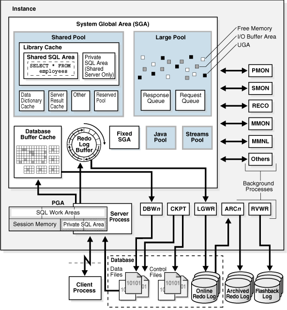

Database Architacture

从上到下，从左到右观察：
2.基本内存结构
-
系统全局区（SGA)
-
程序全局区（PGA)
-
用户全局区（UGA)
-
软件代码区
3. System Global Area（SGA）系统全局区
- Shared Pool
- Library Cache
- Shared SQL Area
- Private SQL Area (Shared Server Only)
- Data Dictionary Cache
- Server Result Cache
- Other
- Reserved Pool
- Large Pool
- Response Queue
- Request Queue
- Database Buffer Cache
- Redo Log Buffer
- Fixed SGA
- Java Pool
- Stream Pool
2.Backgroup Processes 后台进程
- PMON
- SMON
- RECO
- MMON
- MMNL
- Others